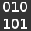

Cheats Sheets
Terminal Unix
1.Qu'est-ce qu'un Terminal Unix ?
2.Quelques commandes de bases.
3.Quelques sites pour plus commandes.
Raccourcis Linux ou Mac
1.Quelques raccourcis Linux et Mac.
2.Quelques sites pour plus de raccourcis.
Vim
1.Qu'est-ce que Vim ?
2.Quelques commandes de bases.
3.Quelques sites pour plus de commandes.
Git
1.Qu'est-ce que Git ?
2.Quelques commandes de bases.
3.Quelques sites pour plus de commandes.
© 2015 Alexis